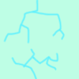
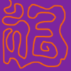
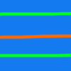
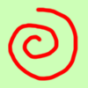

On the Subject of Exoplanets
Balenci’, Balenci’, Balenci’, Balenci’, Balenci’, Balenci’, Balenci’, Balenci’, Balenci’, Balenci’, Balenci’, Balenci’, Balenci’, Balenci’, Balenci’.
- On the module is a star, and three planets orbiting it. To solve the module, press the “target planet” when the last digit of the countdown timer is the “target digit”.
- The starting target planet is the planet that’s orbiting in a different direction than the other planets. If all the planets are orbiting clockwise, the starting planet is the one closest to the star. If all the planets are orbiting counterclockwise, the starting planet is the one farthest from the star. The starting target digit is the surface value of the target planet, as determined by the planet’s appearance.
| 0 | 1 | 2 | 3 | 4 |
|  | ||||
| 5 | 6 | 7 | 8 | 9 |
|  |  |  |
- Now, modify the target planet and target digit using the table on the next page. From the cell labelled “start”, start by facing north, then turn 45° in the direction the star is spinning for every battery on the bomb. Move in that direction to the cell in the ring of the starting target planet (for example, the outermost planet corresponds to the outermost ring in the table).
- Take the sum of the planet’s orbital period and the planet’s surface value, and modulo by the number of battery holders. (If there are no battery holders, modulo by 5.) Then, add the number of ports. Move, in the direction the planet is orbiting, this many spaces. Apply the rule that corresponds to the letter that was landed on.
- Move to the next ring/planet inward (if the current ring is the inner ring, move to the outer ring) and continue performing the above step until a modification has been carried out for all three planets.